りりりり……
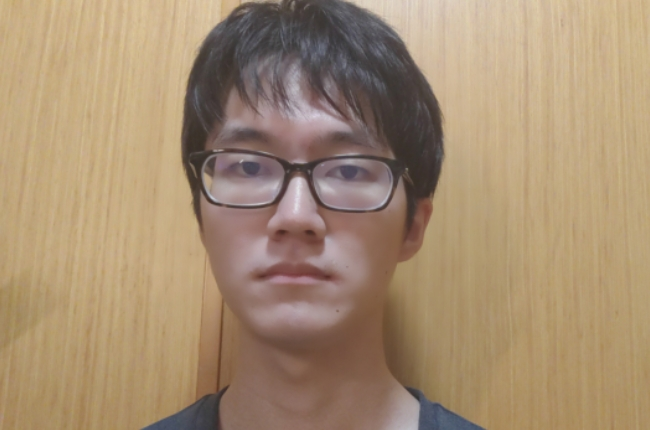
りりりりり……

りりりりりりり……
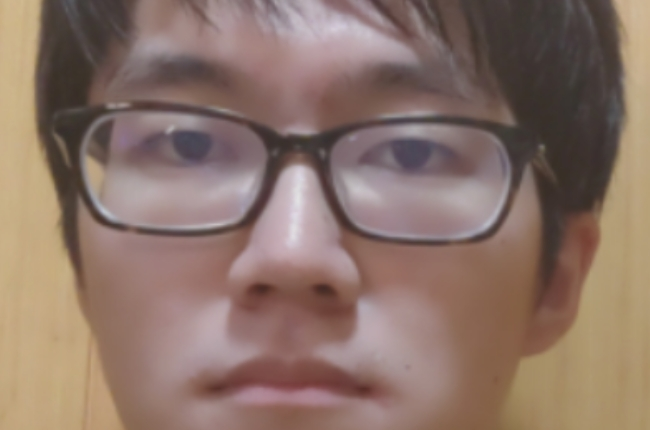
りりりり……
変顔20連発、はっじまーるよー！
変顔その1!!
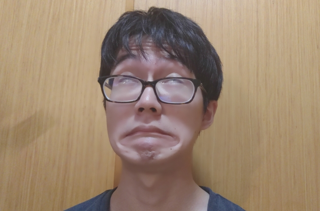
むげんぞ・ずげんぞ・ごげんぞー！
カエルかな？モアイかな？郵便ポストかな？ウハハハ、オモロイ・オモロイ・オモロイ！！！
変顔その2!!
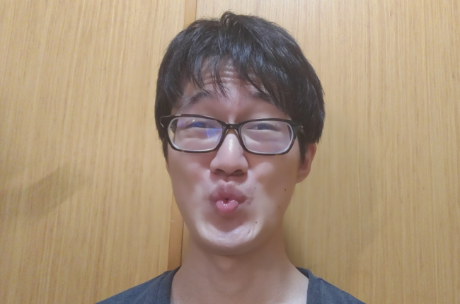
ちゅーべれ・りゅーぶれ・しゅぎっひー！
chuca（チュカ）・chuca（チュカ）・chuca（チュカ）・chuca（チュカ）・chuca（ちゅか）・皆んな今年の夏はどうするー？？僕はおせろぱちんぺのお寺の兵隊さんのぺらりんぽ！
変顔その3!!
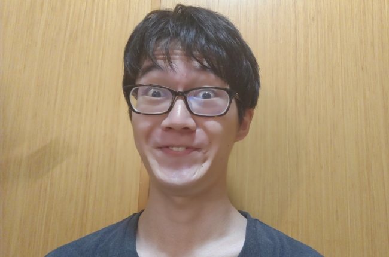
ろはかひくスゥーすェー、しゃきちゃむにょんこにゃーん！
鉄道（でんしゃ）乗ってサ、命箱（おべんと）食べてサ、事実（しゃしん）撮ってサ、息は冷たい排骨麺（パーコーメン）のうつろな羞（はじ）らいのニホヒ。（→ソウイウアナタハブリキノココロノマガイモノ。）
変顔その4!!
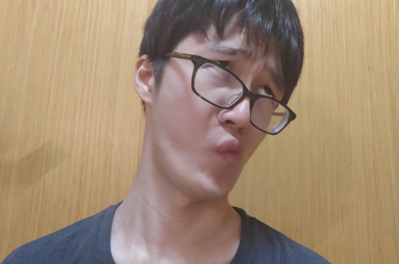
ね（テ）゛っっっッっっ・・・・・・…。。。i/H/e/r/b
下卑臓ぶぐぶぐ斜念師ごらごら勃破米へそへそ露凡罪にゅぐにゅぐ鼻俗妃まぎまぎ強児街くりくり酒捨坊じんじん泣鎖星まれまれ杖痴雅そきそき託辱蛸どぺどぺ軍茶刑ゆちゆち損肺勉ねなねな豚迫夜せぐせぐ臭諦神むりょむりょ悟無萌えひえひ▓
・
・
・
・
ドラゴンクエスト（別にこれがそうというわけではないけれど）
変顔その5!!

ねけねけねけねけ……………ねけねけw
夜の闇の中……奴の声が聴こえる……人を惑わし……世間を欺き……大切なモノを奪ってゆく……その正体は……その真相は……ナゼ……(ﾅｾﾞ……)コタエハ……(ｺﾀｴﾊ……)
答えはぼっとん便所に財布を落としたオンボロオジサンメンチカツです！！！！！！
↑急に大きな声を出したからって、嫌いにならないでね
↓あたしがカーテンのうしろにいても、気づかないふりをしてね
変顔その6!!
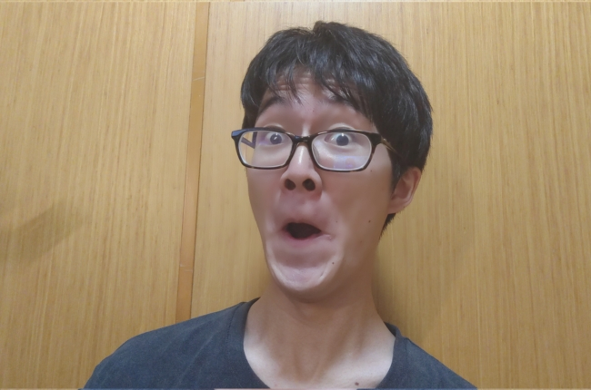
お
お
お
お客様は神様ですー！
ABCDEFGHIJKLMNOPQRSTUVWXYZ
ワンポイントアドバイス：
お客様は神様ですのあとにABCを言えば面白いと思っているらしい。恐ろしい。まさにその通りだ。彼は最初から全てお見通しだったというわけか。決めた。彼と結婚する。止めたって無駄です。この愛の炎は、きっとニューハンプシャーじゅうの消防車が束になっても消せないでしょうね。さあ、このアヤメの花を受け取りなさい。二度とプラネタリウムに行けない身体にしてあげる。
変顔その7!!
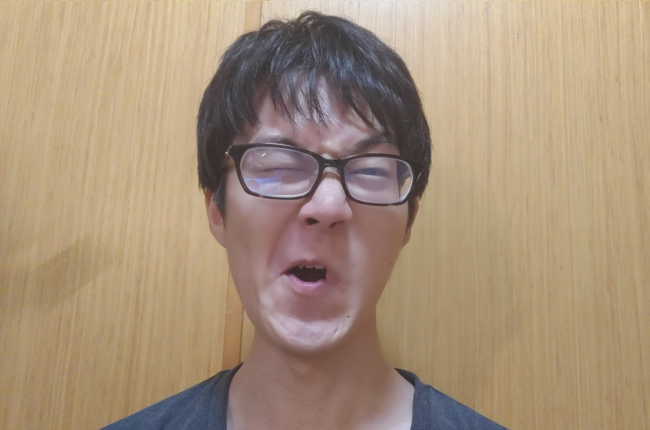
さあいくぞー！チンコチンコチンコチンコチンコチンコチンコチンコチンコチンコチンコチンコチンコチンコチンコチンコチンコチンコチンコチンコチンコチンコチンコチンコチンコチンコチンコチンコチンコチンコチンコチンコチンコチンコチンコチンコチンコチンコチンコチンコチンコチンコチンコチンここで働かせてください。
世界中から絶賛のコメントが集まっています!!
●1曲目のイントロが始まった瞬間、名盤を確信した。レモンサワーを飲みすぎた梅沢富雄を思わせる歌声は鳥肌もの。もうお前ら結婚しろ。（50代男性）
●時代も国境も越えた、普遍的で力強いメッセージに胸を打たれました。でも裏山の狼どもが騒いでいるので星1です。（20代女性）
●私の水筒知りませんか？誰もいない職員室の絵が描いてあるんですけど……（30代男性）
心の闇を照らしてください。
変顔その8!!
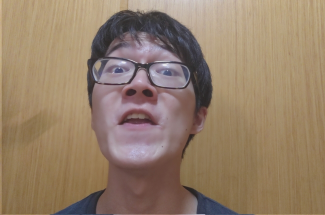
はな〜ん！いっとそけ？こんびずま？らけお？ごしゅでんぞ？ZZX？ぬぽ〜〜〜〜〜〜〜〜ん!!!!!わいらきゅーぢくましんびけんそやちけらげもよいぬらあだげかよじばぞち！！！！！！！！！！！！
（訳者注：色の薄さに自信のなさが表れていると思われるかもしれない。だがそれは間違いだ。あなたは何も分かっていない。でも私だって、大して分かっているわけではないのだ。いったい私とあなたの何が違う？私たちは友達になれそうじゃないか。でも結局は、軽蔑しあって生きていくしかない。悲しいよ。悔しいよ。でもあなたは、私が傷つくことすら許してくれないのでしょうね。だからお別れを言います。さようなら。私のこと、ハウステンボスの喫煙所で思い出してくださいね）
変顔その9!!
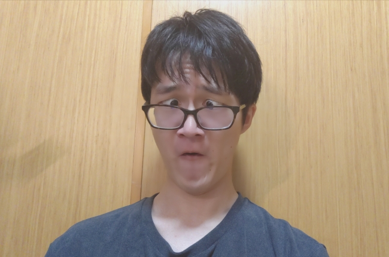
題：「家庭菜園」
妹がバースデーケーキを破壊した時、私は自室の窓から隣家の家庭菜園を見下ろしていた。その家庭菜園にはプランターや土嚢がままごとのようにちょこんと置かれており、彼らはその猫の額ほどのスペースでトマトだかキュウリだかを栽培しているらしかった。
ほどなくして家を震わせるような怒鳴り声と、頬を張る音が鳴り響いた。だがそのあとは何も聞こえなかった。泣き声も、弁明の言葉も、椅子を引く音さえも。私はそんなはずはないと思い耳をそばだてたが、表の通りを走り抜ける車の音が聞こえてきただけだった。
こういうことは以前にもあった。何年か前、試験勉強に精を出している妹のためにドーナツを買って帰ったことがある。妹はドーナツの包みを見ると心底嬉しそうに「お兄ちゃんありがとう」と言い、コーヒーを淹れに台所へ向かった。だが翌朝私が家を出ると、家の前の道路にドーナツは投げ捨てられていた。
道に落ちているドーナツは異形の生物のように見え、私は少したじろいだが、すぐにそれが昨夜妹にあげたものだと気づいた。しかし、妹を怒鳴りつけたり殴ったりしようとは思わなかった。私がやったことは、道路の真ん中あたりに落ちていたドーナツを足を使って道端に寄せただけ。それでおしまいだった。
部屋のドアが、控えめな調子で2回ノックされた。開けると妹が立っていた。右の頬を赤く腫らし、シャツの裾にクリームの跡がついていることを除けば、普段と全く変わらない様子に見えた。妹は私に向かって小さく会釈をした。誰か思い出せない人に軽く挨拶するような動きだった。
「お兄ちゃん」と妹は言った。「ちょっといい？」
妹は先ほどまで私が眺めていた窓の外の方に視線を向け、わずかな間をおいて再び口を開いた。
「今週の風呂掃除って、誰がやることになってたんだっけ」
「おれが」と私は言った。この一言を言うために今までずっと妹と暮らしてきたような感じがした。
「そっか」と妹は言い、ドアを閉め、自分の部屋へと戻って行った。私も再び窓から隣家の家庭菜園を眺めることにした。そうしたかったわけではないが、他のことをしようとするよりはずっとましだった。その庭は周囲を民家やマンションに囲まれ、日光もろくに当たっていないように見えた。土の質だってきっと良くないだろう。いくら時間と労力を費やしても、貧相で無味で虫のように柔らかい、陰気な野菜しか採れないに違いない。それでもあの家の人々は、その野菜を収穫して食べなければならないのだ。そう思うとひどく悲しい気持ちになった。まるで自分の家族のことのように悲しかった。
お読みいただいたのは私が数年前に書いた短編小説です。今読んでも悪くないと思う。
変顔その10!!
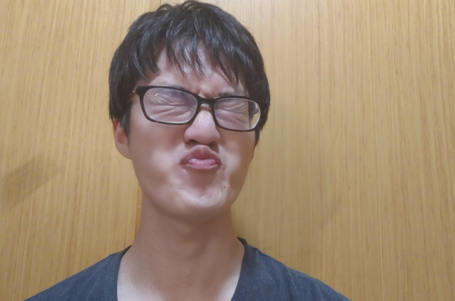
んー！んー！んー！
んー！んー！んー！
んー！んー！んー！
んー！んー！んー！
んー！んー！んー！
んー！んー！んー！
んー！んー！んー！
んー！んー！んー！
んー！んー！んー！
んー！んー！んー！
んー！んー！んー！
んー！んー！んー！
んー！んー！んー！
んー！んー！んー！
んー！んー！んー！
んー！んー！んー！
んー！んー！んー！
んー！んー！んー！
んー！んー！んー！
んー！んー！んー！
んー！んー！んー！
んー！んー！んー！
んー！んー！んー！
んー！んー！んー！
んー！んー！んー！
んー！んー！んー！
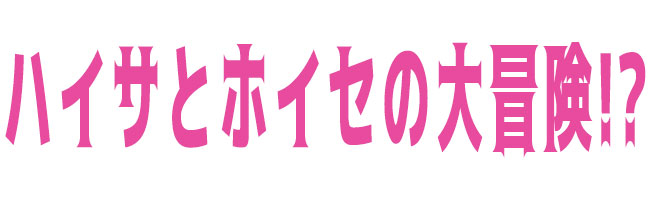
変顔その11!!
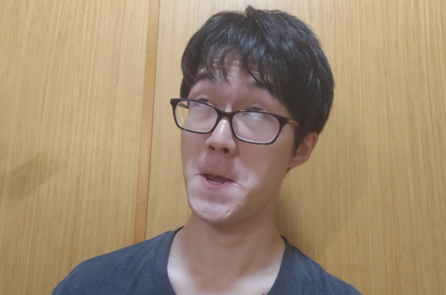
お皿ですね。あぼーん。
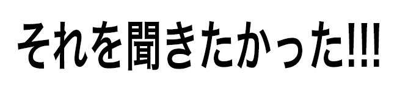
このように、全国のブラ●クジャ●クのみなさまも大興奮のご様子です・・・・。
このHeat Waveに乗り遅れるな！！！！！！！！！ファケルセンモリツィオグベズマダンセルトリトアトニコバケラグジャピンダボルジアバケショボンサルベアチオバンベラダストリオケンガタッレーイサオルセモズラオヘナタンカスカモヤバルサオベンナ
変顔その12!!
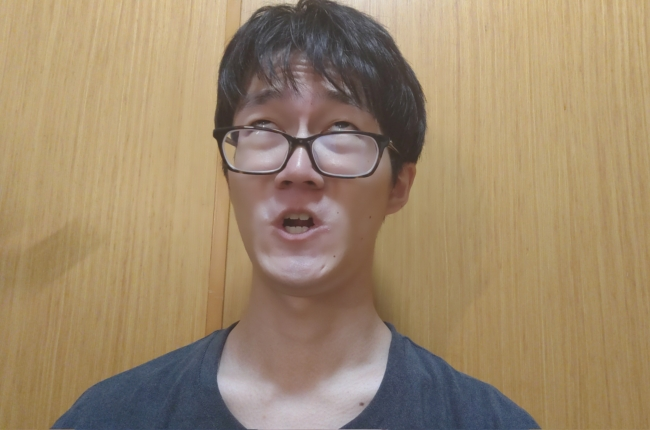
▲注意！！！以下、心臓の弱い方・ユーモア欠落症の方・警察関係者の方の閲覧はかたくお断わり致します。万一不正が発覚した場合は１件につき５0万円（税別）の罰金を申し受けます。
5 秒後に報酬を獲得できます
4 秒後に報酬を獲得できます
3 秒後に報酬を獲得できます
2 秒後に報酬を獲得できます
1 秒後に報酬を獲得できます
（今更けど「報酬」って言い方やーよね）
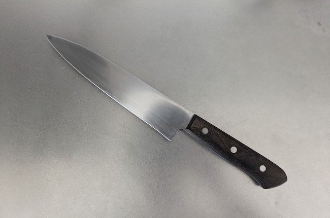
包丁画像（ほちょがぞ）センチメンタル
（瞬間センチメンタルのもじりと考えていただいて結構）
変顔その13!!
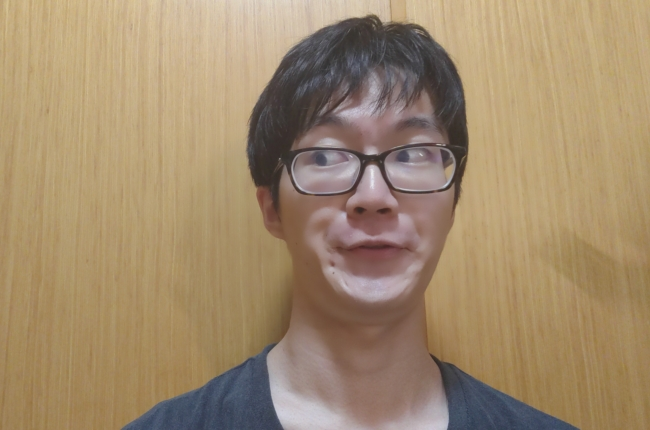
イケメン忍者の登場だー！ぶるるん・ぶるるん・ぶるるん・ぽん
さてここで問題です以下の3つの音声ファイルのうち気持ちの良いあいさつが聞けるのはたった1つだけ！君は当てられるかな？？
（※くれぐれも音量には注意してくださいね。大好きなみなさんが耳を痛めたらと考えるだけで私はつらい。もしそんなことになったら、私は陽の光も届かない深い井戸の底に潜って、一生ダンゴムシと銀行ごっこをして過ごすことになるでしょう。だから、どうか端末のヴォリュームを少し下げて聞いてください。ご協力どうもありがとう。あなたとは美味い酒が飲めそうだ）
①
②
③
見事正解した方はおめでとう！不正解でも、あんま気にすンなよ。
変顔その14!!

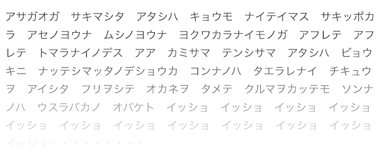
残り：982文字
この記事は有料記事です。有料会員になると続きをお読みいただけます。（新規会員登録／ログイン）
でも、あたしの♡を見事射止めることができたら、無料で続きを読めちゃうかも……？自信のある紳士は以下の試験にチャレンジしてみてねっ！
【試験】
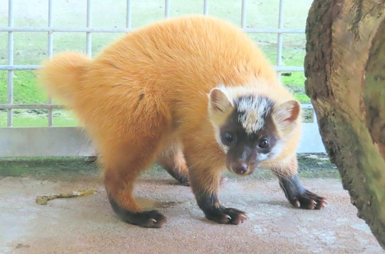
このかわいらしい貂（てん）を1分間見つめなさい。そうしたら目を閉じ、あなたが今最も行きたい場所の風景を思い浮かべなさい。そこにノジマ電気があれば、あなたは合格。今夜0時、西の応接間でお待ちしています。ニッパーを持ってきてください。
変顔その15!!
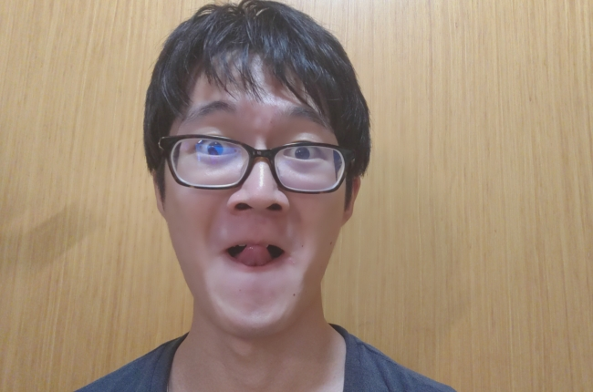
68293775102942643385710938235612976402527867134904032286549766053728516348067125689038648193027164522849764901846362819316453847590847751284673847058390264804641037227381054916963287
（めだかボックスに出てくる数字だけでしゃべるキャラみたいだな）
（え、俺なんかまずいこと言った？）
（色で会話すんなし。通じると思うなよ）
変顔その16!!
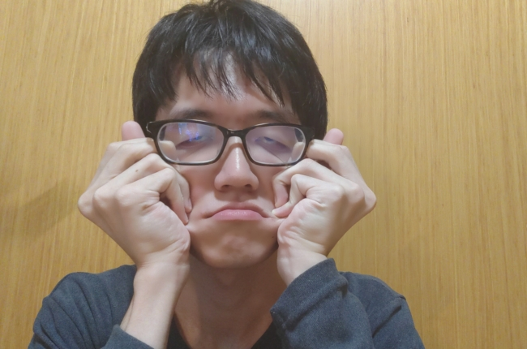
🦂 🏌 😂
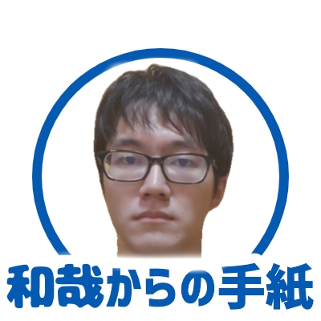ちょっと待ったちょっと待った！変顔に指を使うのってアリなの！？それってルール違反じゃない！？！？
みんなで考えてみよう！
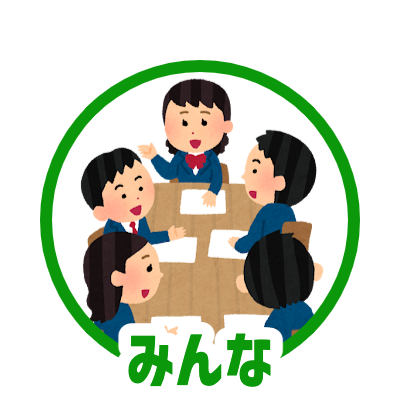ワイワイ！ガヤガヤ！
…………。
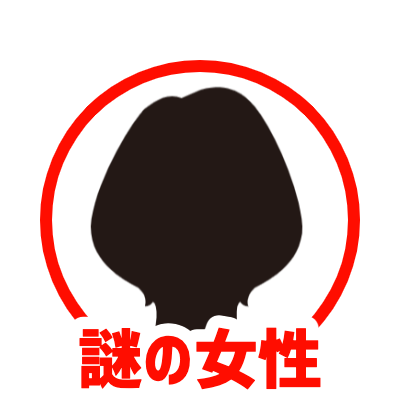あなた、この場所に馴染めてないみたいね。
えっ？
実は私もなの。こういう雰囲気ってどうも苦手で……なんだかお酒を飲めない人はお呼びじゃないって言われてるみたい。
奇遇ですね。自分も全くの下戸なんですよ。
あら！なんだか私たち、気が合いそうね。
……ねえ、2人でここから抜け出さない？もっといいところに行きましょうよ。
いいところ？それって……
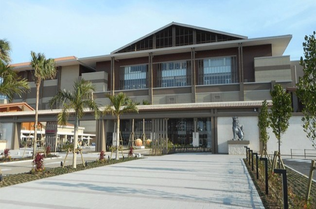
いや、いいところってイオンモール沖縄ライカムかい！！確かになんでも揃うけども！！こんなのってアリなの！？！？
みんなで考えてみよう！
ワイワイ！ガヤガヤ！
↑
無限ループって怖くね？
↑
いや、おれは虎のほうが怖い
終 制作・著作 NHK（1行にしたら意味ねーな）
変顔その17!!
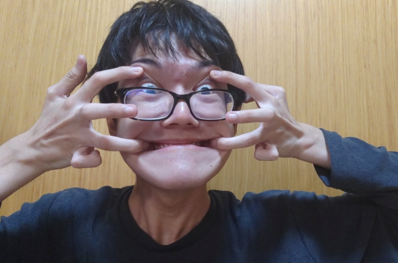
☆参☆上☆
今日も悪をくじき正義を守るために闘うのであった・・・・・・・。
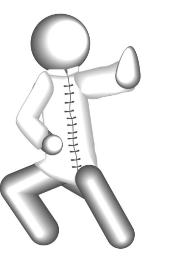
アチョー！
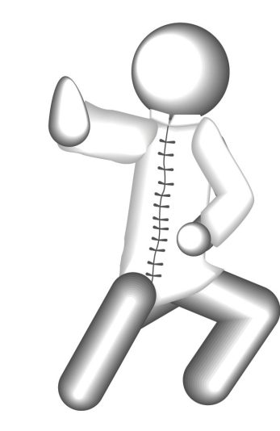
アチョー！
アチョー！
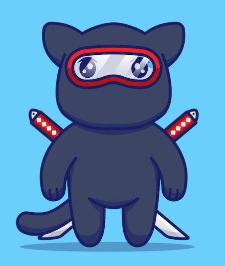
？？？
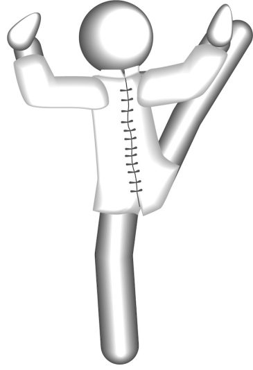
ワチョー！
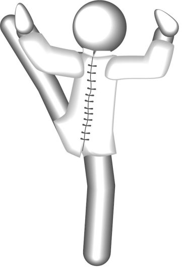
ワチョー！
ワチョー！
？？？
自由記述欄（告知などあればこちらにどうぞ）
変顔その18!!
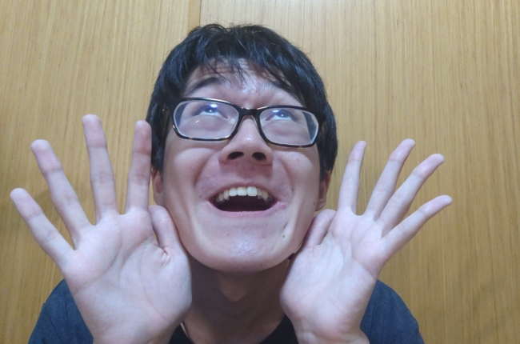
☆★☆ぱ〜っ！きれいなお花が咲きました☆★☆
【START】
Q. このお花、どこに飾る？
・机の上→【1】へ
・窓際→【2】へ
・どこにも飾らない→【13】へ
【1】
Q. あなたの前に二手に分かれた道があります。右の道は山に、左の道は海に続いています。どちらに進む？
・山へ続く道→【2】へ
・海へ続く道→【3】へ
・どちらにも進まない→【13】へ
【2】
Q. あなたはサバンナにいます。双眼鏡を覗くと、ある動物が見えました。それは何？
・ゾウ→【3】へ
・キリン→【5】へ
・何もいなかった。ただの見間違い→【13】へ
【3】
Q. あなたは文化祭のイベントでコスプレをすることになりました。どんな衣装を着る？
・かわいい系の衣装→【4】へ
・面白い系の衣装→【5】へ
・コスプレなどしない→【13】へ
【4】
Q. あなたは旅行へ行く計画を立てています。目的地までは何で行く？
・高いけれど快適で早く着くジェット機→【6】へ
・狭くて時間がかかるけれど安い深夜バス→【診断結果A】へ
・そもそも旅行になど行かない→【13】へ
【5】
Q. あなたはボウリングをしています。あなたの投げた球でピンは何本倒れた？
・5〜10本→【6】へ
・0〜5本→【診断結果B】へ
・そもそもボウリングなどしない→【13】へ
【6】
Q. あなたは美術館で開催されている展覧会に行きました。どんな絵に感銘を受けた？
・ベテラン画家が描いた、達者で貫禄ある作品→【診断結果C】へ
・新人画家が描いた、荒削りだが勢いのある作品→【診断結果D】へ
・絵を見て感動などしない→【13】へ
【診断結果A】
あなたは……
【全部のマスがどどめ色のルービックキューブをベッドの下に隠している綾波レイ】タイプ！
錦織圭のピアノ教室に通うと思わぬ人生の転機が訪れるかも！？
【診断結果B】
あなたは……
【コミックシーモアの広告だけを母の形見のようになんども見返す野原しんのすけ】タイプ！
コンビニの冷やし中華を買う時は一緒にリチウム電池も買うと◎！
【診断結果C】
あなたは……
【有名Vチューバーが使っているデンタルフロスの銘柄を予想するアフィリエイトブログで財を築き函館に動物病院を開業したDr.ワイリー】タイプ！
サンボマスターを聴きながら「鬼門を開ける方法」を実践しなさい。それで実る稲穂もございましょう。
【診断結果D】
あなたは……
【坂本龍馬】タイプ！
やっと見つけた。今の時代はあなたには窮屈すぎるよね。ほら、武器を持って。一緒にイギリスを征服しに行こう。
【13】
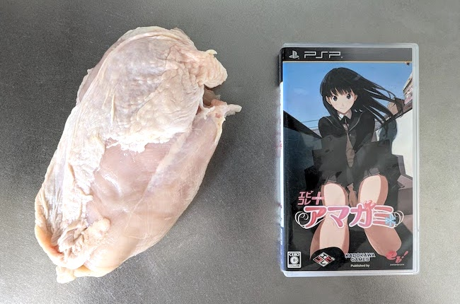
君のようなつむじ曲がりは鶏むね肉でも眺めていればよろしい。ついでに絢辻さんに根性を鍛え直してもらいなさい。
変顔その19!!

ここまで「変顔20連発」をお読みいただき、ありがとうございました。しかし、道化を演じ続けたまま記事を終わらせるのは誠実ではないと思い、急遽企画を中断させていただきました。今から言うことが私の本心であり、私という人間の本当の姿です。ごめんなさい。私は卑怯者の嘘つきです。私は、どうも嘘が多い人間なんです。もちろん、誰かを傷つけるような嘘じゃないんです。でも、自分を大きく見せようとしたり、ちゃんとやれているふりをしたり、そういう小さなごまかしが積み重なって、気がつけば自分が何者なのか分からなくなるような、そんな種類の嘘です。本当はできないことを「できる」なんて言ってみたり、知らないことを、さも前から知っていたかのように相槌を打ったり。あなたも、一度くらいそんな人間を目にしたことがあるでしょう？ええ、あれが私なんです。恥ずかしいほどに。 自分をごまかす癖は、いつのまにか骨の中にまで染み込んでしまったようで、ふとした瞬間に出てしまう。大したこともしていないのに、したような顔で笑ってみたり。努力と呼ぶにはあまりにも薄い時間を積み上げただけで、「少しくらいは評価されてもいいんじゃないか」なんて、そんな傲慢な気持ちが頭をもたげたり。思い返せば返すほど、情けないやら恥ずかしいやら、逃げ出したくなるようなありさまです。私は、あなたよりつまらない。どうすればあなたにバカにされずにすむかわからない。私を軽蔑しないで。私を無視しないで。私を見捨てないで。私は今までずっと、あなたに認められるために頑張ってきたんです。これで満足か？少しはあなたの心を動かすことができましたか？私は、あなたが私に何の影響も受けないまま、それなりに満ち足りた人生を送ると考えただけで気が狂いそうになる。いや、ごめんなさい。こんなことまで言うつもりはなかった。でもあなたならきっと許してくれますよね。私の話を聞いてくれてありがとう。もう二度とこんなやり方で目立とうとはしません。
ナーンチッテ！！
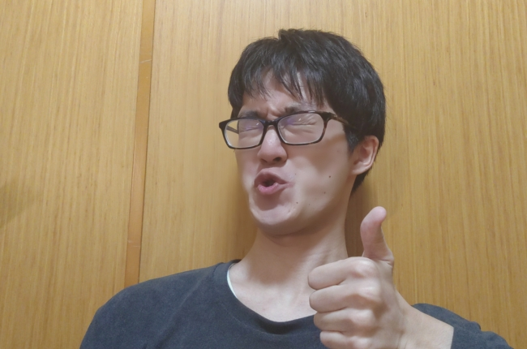
イエーイ！！以上、本音告白ドッキリでしたー！！変顔20連発は、もうちょっとだけ続くんじゃ！！んじゃ、最後まで楽しんでってチョ！！うわーーーーーーーーーーーーーーーーーーーーーっっっっっっっっっっ！！！！！！！！！！！！！！！
変顔その20!!
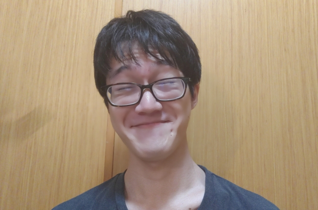
いろいろあったけど、最後はきらきらスマイルで終わり！みんな笑顔になっちゃえー！⟡.·キラキラ*⟡.·キラキラ*⟡.·キラキラ*⟡.·キラキラ*⟡.·キラキラ*⟡.·キラキラ*⟡.·キラキラ*⟡.·キラキラ*⟡.·キラキラ*⟡.·キラキラ*⟡.·キラキラ*⟡.·キラキラ*⟡.·キラキラ*⟡.·キラキラ*⟡.·キラキラ*⟡.·キラキラ*⟡.·キラキラ*⟡.·キラキラ*⟡.·キラキラ*⟡.·キラキラ*⟡.·キラキラ*⟡.·キラキラ*⟡.·キラキラ*⟡.·キラキラ*⟡.·キラキラ*⟡.·キラキラ*⟡.·キラキラ*⟡.·キラキラ*⟡.·キラキラ*⟡.·キラキラ*⟡.·キラキラ*⟡.·キラキラ*⟡.·キラキラ*⟡.·キラキラ*⟡.·キラキラ*⟡.·キラキラ*⟡.·キラキラ*⟡.·キラキラ*⟡.·キラキラ*⟡.·キラキラ*⟡.·キラキラ*⟡.·キラキラ*⟡.·キラキラ*⟡.·キラキラ*⟡.·キラキラ*⟡.·キラキラ*⟡.·キラキラ*⟡.·キラキラ*⟡.·キラキラ*⟡.·キラキラ*⟡.·キラキラ*⟡.·キラキラ*⟡.·キラキラ*⟡.·キラキラ*⟡.·キラキラ*⟡.·キラキラ*⟡.·キラキラ*⟡.·キラキラ*⟡.·キラキラ*⟡.·キラキラ*⟡.·キラキラ*⟡.·キラキラ*⟡.·キラキラ*⟡.·キラキラ*⟡.·キラキラ*⟡.·キラキラ*⟡.·キラキラ*⟡.·キラキラ*⟡.·キラキラ*⟡.·キラキラ*⟡.·キラキラ*⟡.·キラキラ*⟡.·キラキラ*⟡.·キラキラ*⟡.·キラキラ*⟡.·キラキラ*⟡.·キラキラ*⟡.·キラキラ*⟡.·キラキラ*⟡.·キラキラ*⟡.·キラキラ*⟡.·キラキラ*⟡.·キラキラ*⟡.·キラキラ*⟡.·キラキラ*⟡.·キラキラ*⟡.·キラキラ*⟡.·キラキラ*⟡.·キラキラ*⟡.·キラキラ*⟡.·キラキラ*⟡.·キラキラ*⟡.·キラキラ*⟡.·キラキラ*⟡.·キラキラ*⟡.·キラキラ*⟡.·キラキラ*⟡.·キラキラ*⟡.·キラキラ*⟡.·キラキラ*⟡.·キラキラ*⟡.·キラキラ*⟡.·キラキラ*⟡.·キラキラ*⟡.·キラキラ*⟡.·キラキラ*⟡.·キラキラ*⟡.·キラキラ*⟡.·キラキラ*⟡.·キラキラ*⟡.·キラキラ*⟡.·キラキラ*⟡.·キラキラ*⟡.·キラキラ*⟡.·キラキラ*⟡.·キラキラ*⟡.·キラキラ*⟡.·キラキラ*⟡.·キラキラ*⟡.·キラキラ*⟡.·キラキラ*⟡.·キラキラ*⟡.·キラキラ*⟡.·キラキラ*⟡.·キラキラ*⟡.·キラキラ*⟡.·キラキラ*⟡.·キラキラ*⟡.·キラキラ*⟡.·キラキラ*⟡.·キラキラ*⟡.·キラキラ*⟡.·キラキラ*⟡.·キラキラ*⟡.·キラキラ*⟡.·キラキラ*⟡.·キラキラ*⟡.·キラキラ*⟡.·キラキラ*⟡.·キラキラ*⟡.·キラキラ*⟡.·キラキラ*⟡.·キラキラ*⟡.·キラキラ*⟡.·キラキラ*⟡.·キラキラ*⟡.·キラキラ*⟡.·キラキラ*⟡.·キラキラ*⟡.·キラキラ*⟡.·キラキラ*⟡.·キラキラ*⟡.·キラキラ*⟡.·キラキラ*⟡.·キラキラ*⟡.·キラキラ*⟡.·キラキラ*⟡.·キラキラ*⟡.·キラキラ*⟡.·キラキラ*⟡.·キラキラ*⟡.·キラキラ*⟡.·キラキラ*⟡.·キラキラ*⟡.·キラキラ*⟡.·キラキラ*⟡.·キラキラ*⟡.·キラキラ*⟡.·キラキラ*⟡.·キラキラ*⟡.·キラキラ*⟡.·キラキラ*⟡.·キラキラ*⟡.·キラキラ*⟡.·キラキラ*⟡.·キラキラ*⟡.·キラキラ*⟡.·キラキラ*⟡.·キラキラ*⟡.·キラキラ*⟡.·キラキラ*⟡.·キラキラ*⟡.·キラキラ*⟡.·キラキラ*⟡.·キラキラ*⟡.·キラキラ*⟡.·キラキラ*⟡.·キラキラ*⟡.·キラキラ*⟡.·キラキラ*⟡.·キラキラ*⟡.·キラキラ*⟡.·キラキラ*⟡.·キラキラ*⟡.·キラキラ*⟡.·キラキラ*⟡.·キラキラ*⟡.·キラキラ*⟡.·キラキラ*⟡.·キラキラ*⟡.·キラキラ*⟡.·キラキラ*⟡.·キラキラ*⟡.·キラキラ*⟡.·キラキラ*⟡.·キラキラ*⟡.·キラキラ*⟡.·キラキラ*⟡.·キラキラ*⟡.·キラキラ*⟡.·キラキラ*⟡.·キラキラ*⟡.·キラキラ*⟡.·キラキラ*⟡.·キラキラ*⟡.·キラキラ*⟡.·キラキラ*⟡.·キラキラ*⟡.·キラキラ*⟡.·キラキラ*⟡.·キラキラ*⟡.·キラキラ*⟡.·キラキラ*⟡.·キラキラ*⟡.·キラキラ*⟡.·キラキラ*⟡.·キラキラ*⟡.·キラキラ*⟡.·キラキラ*⟡.·キラキラ*⟡.·キラキラ*⟡.·キラキラ*⟡.·キラキラ*⟡.·キラキラ*⟡.·キラキラ*⟡.·キラキラ*⟡.·キラキラ*⟡.·キラキラ*⟡.·キラキラ*⟡.·キラキラ*⟡.·キラキラ*⟡.·キラキラ*⟡.·キラキラ*⟡.·キラキラ*⟡.·キラキラ*⟡.·キラキラ*⟡.·キラキラ*⟡.·キラキラ*⟡.·キラキラ*⟡.·キラキラ*⟡.·キラキラ*⟡.·キラキラ*⟡.·キラキラ*⟡.·キラキラ*⟡.·キラキラ*⟡.·キラキラ*⟡.·キラキラ*⟡.·キラキラ*⟡.·キラキラ*⟡.·キラキラ*⟡.·キラキラ*⟡.·キラキラ*⟡.·キラキラ*⟡.·キラキラ*⟡.·キラキラ*⟡.·キラキラ*⟡.·キラキラ*⟡.·キラキラ*⟡.·キラキラ*⟡.·キラキラ*⟡.·キラキラ*⟡.·キラキラ*⟡.·キラキラ*⟡.·キラキラ*⟡.·キラキラ*⟡.·キラキラ*⟡.·キラキラ*⟡.·キラキラ*⟡.·キラキラ*⟡.·キラキラ*⟡.·キラキラ*⟡.·キラキラ*⟡.·キラキラ*⟡.·キラキラ*⟡.·キラキラ*⟡.·キラキラ*⟡.·キラキラ*⟡.·キラキラ*⟡.·キラキラ*⟡.·キラキラ*⟡.·キラキラ*⟡.·キラキラ*⟡.·キラキラ*⟡.·キラキラ*⟡.·キラキラ*⟡.·キラキラ*⟡.·キラキラ*⟡.·キラキラ*⟡.·キラキラ*⟡.·キラキラ*⟡.·キラキラ*⟡.·キラキラ*⟡.·キラキラ*⟡.·キラキラ*⟡.·キラキラ*⟡.·キラキラ*⟡.·キラキラ*⟡.·キラキラ*⟡.·キラキラ*⟡.·キラキラ*⟡.·キラキラ*⟡.·キラキラ*⟡.·キラキラ*⟡.·キラキラ*⟡.·キラキラ*⟡.·キラキラ*⟡.·キラキラ*⟡.·キラキラ*⟡.·キラキラ*⟡.·キラキラ*⟡.·キラキラ*⟡.·キラキラ*⟡.·キラキラ*⟡.·キラキラ*⟡.·キラキラ*⟡.·キラキラ*⟡.·キラキラ*⟡.·キラキラ*⟡.·キラキラ*⟡.·キラキラ*⟡.·キラキラ*⟡.·キラキラ*⟡.·キラキラ*⟡.·キラキラ*⟡.·キラキラ*⟡.·キラキラ*⟡.·キラキラ*⟡.·キラキラ*⟡.·キラキラ*⟡.·キラキラ*⟡.·キラキラ*⟡.·キラキラ*⟡.·キラキラ*⟡.·キラキラ*⟡.·キラキラ*⟡.·キラキラ*⟡.·キラキラ*⟡.·キラキラ*⟡.·キラキラ*⟡.·キラキラ*⟡.·キラキラ*⟡.·キラキラ*⟡.·キラキラ*⟡.·キラキラ*⟡.·キラキラ*⟡.·キラキラ*⟡.·キラキラ*⟡.·キラキラ*⟡.·キラキラ*⟡.·キラキラ*⟡.·キラキラ*⟡.·キラキラ*⟡.·キラキラ*⟡.·キラキラ*⟡.·キラキラ*⟡.·キラキラ*⟡.·キラキラ*⟡.·キラキラ*⟡.·キラキラ*⟡.·キラキラ*⟡.·キラキラ*⟡.·キラキラ*⟡.·キラキラ*⟡.·キラキラ*⟡.·キラキラ*⟡.·キラキラ*⟡.·キラキラ*⟡.·キラキラ*⟡.·キラキラ*⟡.·キラキラ*⟡.·キラキラ*⟡.·キラキラ*⟡.·キラキラ*⟡.·キラキラ*⟡.·キラキラ*⟡.·キラキラ*⟡.·キラキラ*⟡.·キラキラ*⟡.·キラキラ*⟡.·キラキラ*⟡.·キラキラ*⟡.·キラキラ*⟡.·キラキラ*⟡.·キラキラ*⟡.·キラキラ*⟡.·キラキラ*⟡.·キラキラ*⟡.·キラキラ*⟡.·キラキラ*⟡.·キラキラ*⟡.·キラキラ*⟡.·キラキラ*⟡.·キラキラ*⟡.·キラキラ*⟡.·キラキラ*⟡.·キラキラ*⟡.·キラキラ*⟡.·キラキラ*⟡.·キラキラ*⟡.·キラキラ*⟡.·キラキラ*⟡.·キラキラ*⟡.·キラキラ*⟡.·キラキラ*⟡.·キラキラ*⟡.·キラキラ*⟡.·キラキラ*⟡.·キラキラ*⟡.·キラキラ*⟡.·キラキラ*⟡.·キラキラ*⟡.·キラキラ*⟡.·キラキラ*⟡.·キラキラ*⟡.·キラキラ*⟡.·キラキラ*⟡.·キラキラ*⟡.·キラキラ*⟡.·キラキラ*⟡.·キラキラ*⟡.·キラキラ*⟡.·キラキラ*⟡.·キラキラ*⟡.·キラキラ*⟡.·キラキラ*⟡.·キラキラ*⟡.·キラキラ*⟡.·キラキラ*⟡.·キラキラ*⟡.·キラキラ*⟡.·キラキラ*⟡.·キラキラ*⟡.·キラキラ*⟡.·キラキラ*⟡.·キラキラ*⟡.·キラキラ*⟡.·キラキラ*⟡.·キラキラ*⟡.·キラキラ*⟡.·キラキラ*⟡.·キラキラ*⟡.·キラキラ*⟡.·キラキラ*⟡.·キラキラ*⟡.·キラキラ*⟡.·キラキラ*⟡.·キラキラ*⟡.·キラキラ*⟡.·キラキラ*⟡.·キラキラ*⟡.·キラキラ*⟡.·キラキラ*⟡.·キラキラ*⟡.·キラキラ*⟡.·キラキラ*⟡.·キラキラ*⟡.·キラキラ*⟡.·キラキラ*⟡.·キラキラ*⟡.·キラキラ*⟡.·キラキラ*⟡.·キラキラ*⟡.·キラキラ*⟡.·キラキラ*⟡.·キラキラ*⟡.·キラキラ*⟡.·キラキラ*⟡.·キラキラ*⟡.·キラキラ*⟡.·キラキラ*⟡.·キラキラ*⟡.·キラキラ*⟡.·キラキラ*⟡.·キラキラ*⟡.·キラキラ*⟡.·キラキラ*⟡.·キラキラ*⟡.·キラキラ*⟡.·キラキラ*⟡.·キラキラ*⟡.·キラキラ*⟡.·キラキラ*⟡.·キラキラ*⟡.·キラキラ*⟡.·キラキラ*⟡.·キラキラ*⟡.·キラキラ*⟡.·キラキラ*⟡.·キラキラ*⟡.·キラキラ*⟡.·キラキラ*⟡.·キラキラ*⟡.·キラキラ*⟡.·キラキラ*⟡.·キラキラ*⟡.·キラキラ*⟡.·キラキラ*⟡.·キラキラ*⟡.·キラキラ*⟡.·キラキラ*⟡.·キラキラ*⟡.·キラキラ*⟡.·キラキラ*⟡.·キラキラ*⟡.·キラキラ*⟡.·キラキラ*⟡.·キラキラ
めっちゃ面白かったねー！もうどうでもいいか
宝物でした
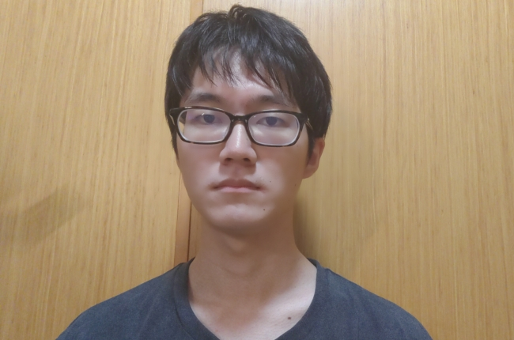
てなわけで、変顔20連発……
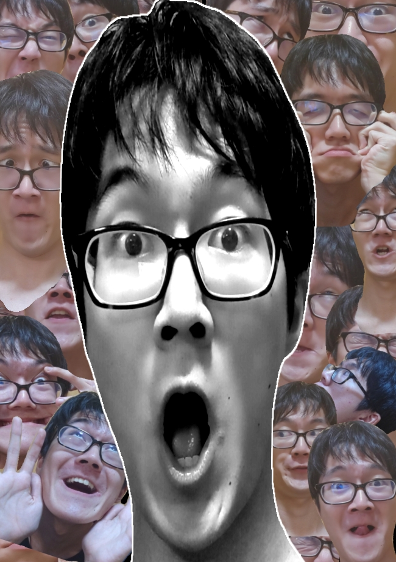
ん〜〜っ！！大成功っ♪☆